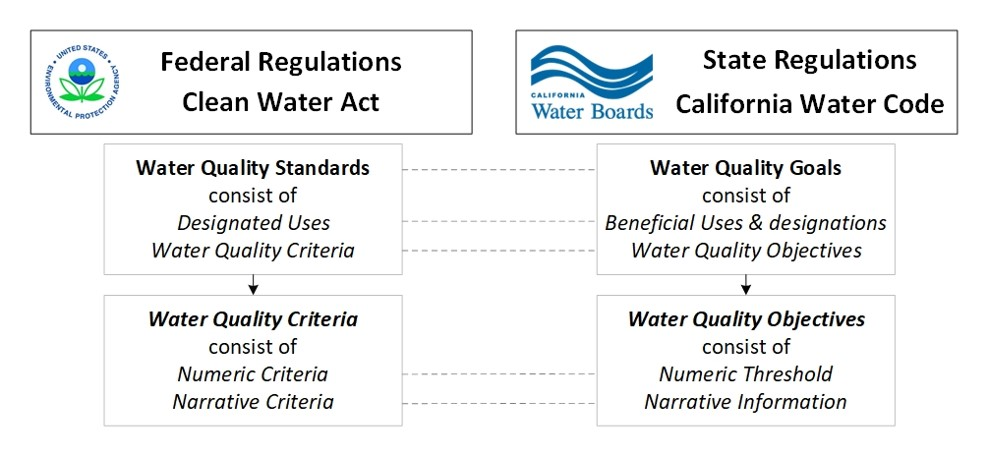

Laws, Regulations, Standards & Thresholds FAQs
What is the difference between Water Quality Standards, Water Quality Criteria, Water Quality Goals and Water Quality Objectives?

Water Quality Standards are at the core of all water management programs, and provide a regulatory basis for water quality management activities authorized under the Federal Clean Water Act and Division 7 of the California Water Code, referred to as the Porter-Cologne Water Quality Control Act.
Pursuant to the Federal Clean Water Act, Water Quality Standards consist of two core components: (1) designated uses and (2) the water quality criteria to protect those uses. Designated uses reflect the management goals for water bodies, and Water Quality Criteria are the water quality levels that are established to protect those designated uses.
In California, Water Quality Standards are commonly referred to as Water Quality Goals, and are embodied in State and Regional Board Water Quality Control Plans, commonly referred to as “Basin Plans” since plans adopted by the Regional Water Boards cover one or more water basins. Basin Plans are the foundation for the Regional Water Boards’ water quality regulatory programs and are regulatory references for meeting the state and federal requirements for water quality control. They provide a plan of actions designed to preserve and enhance water quality and require public participation. Each Regional Water Board has their own Basin Plan(s), which contain:
- Beneficial use definitions;
- Designated beneficial uses for both surface and ground water bodies;
- Water Quality Objectives to protect those beneficial uses;
- Implementation plans that describe the actions necessary to achieve water quality objectives; and
- Descriptions of the surveillance and monitoring activities needed to determine regulatory compliance and assess the health of the water resources.
The Regional Water Boards review their Basin Plans every three years to determine and implement a list of priority planning projects by amending their respective Basin Plans (a process known as the “triennial review”). Amendments to a Basin Plan, once prepared by the Regional Boards, are reviewed by the State Board and the State’s Office of Administrative Law (OAL). Once approved, the amendments are submitted to EPA for final approval.
The State Water Board can also adopt statewide Water Quality Control Plans and Policies for Water Quality Control, which are then incorporated into each of the Regional Basin Plans.
Similar to federal “Water Quality Criteria”, California Water Quality Objectives consist of numeric thresholds (i.e. limitations, levels, or concentrations) and/or narrative information that are established to protect those designated beneficial uses.
Regulatory definitions of key terms used above, include
Definitions from the Federal Clean Water Act
Water Quality Standards are defined as “provisions of State or Federal law which consist of a designated use or uses for the waters of the United States and water quality criteria for such waters based upon such uses. Water quality standards are to protect the public health or welfare, enhance the quality of water and serve the purposes of the Act.” (40 CFR 131.3 (i)).
Water Quality Criteria are defined as “Elements of State water quality standards, expressed as constituent concentrations, levels or narrative statements, representing water quality that supports a particular designated use. When criteria are met, water quality will generally protect the designated use.” (40 CFR 131.3 (b)).
Definitions from Division 7 of the California Water Code, referred to as the Porter-Cologne Water Quality Control Act
Beneficial Uses are goals the California Water Boards designate to ensure Californians have access to the highest water quality and can use it for maximum benefit. By definition, “Beneficial Uses of the waters of the state that may be protected against quality degradation include, but are not limited to, domestic, municipal, agricultural and industrial supply; power generation; recreation; aesthetic enjoyment; navigation; and preservation and enhancement of fish, wildlife, and other aquatic resources or preserves.” (Division 7 WAT 1350 (f)).
Water Quality Objectives are defined as “limits or levels of water quality constituents or characteristics which are established for the reasonable protection of beneficial uses of water or the prevention of nuisance within a specific area.” (Division 7 WAT 1350 (h)).